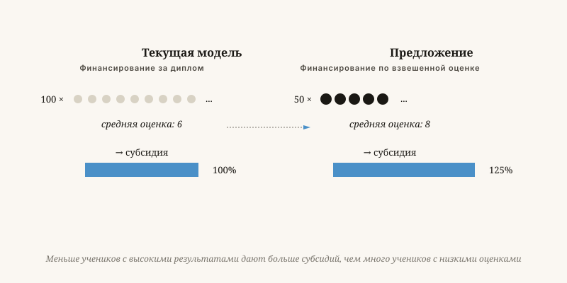

От учебной фабрики к мастерской
Школа, выпускающая сто троечников, получает сейчас больше денег, чем школа, выпускающая пятьдесят отличников. В этом и состоит проблема.
Якобус ван Мерксштейн · 9 мин чтения · 23 мая 2026

Мастерская — где встречаются талант и мотивация
Мы финансируем количество, а не качество
Мы финансируем школы по числу выданных дипломов. Поэтому они выдают дипломы — необязательно образованных людей. Это не жестокость учителей. Это встроенный стимул, который сам по себе транслируется в снижение норм, более лёгкие экзамены и всё больше «индивидуальных маршрутов» для тех, кто в действительности не подходит для данного уровня.
Проблема в одной фразе
Кто оценивает школы по числу успевающих, получит число успевающих. Кто оценивает по образованным людям, получит образованных людей.

Четыре конкретные реформы
Почему это соответствует семимерному мышлению
Закон масштаба в классе
Образование плохо масштабируется. То, что работает в классе из пятнадцати человек, не работает в классе из тридцати. Это не административная проблема — это закон природы. Учитель может уделить внимание ограниченному числу людей одновременно.
Ценность, видимая лишь со временем
Хороший учитель меняет жизнь, и это изменение проявляется в благополучии или процветании лишь спустя десятилетия. Политика, ориентированная только на краткосрочные деньги, не замечает этого значения W.
Свобода как двигатель
Образование требует множественности: разных школ, разных методов, отсутствия монокультуры. Единая министерская программа для семи с половиной тысяч начальных школ — машина выравнивания.
Разве это не элитарно?
Скажут: Вы исключаете детей. Мой ответ: честное зеркало — прямая противоположность исключению.
Тот, кто сегодня получает диплом, за которым мало что стоит, позднее всё равно оказывается исключён — на рынке труда, на учебном курсе, с которым не справляется, в жизни, которая ему не подходит. Это жестче, чем вовремя сказать: это не Ваш путь, посмотрите вот сюда.
Образование — не система социального обеспечения. Это инструмент, помогающий людям стать собой. Это возможно только с честными мерками.
От фабрики знаний — к мастерской
Школа, выпускающая сто шестёрочников, получает больше финансирования, чем школа, выпускающая пятьдесят отличников. В этом и состоит проблема.
Мы финансируем школы по количеству выданных дипломов. Поэтому они выдают дипломы — а не обязательно образованных людей. Это не жестокость учителей. Это встроенный стимул, который сам по себе ведёт к снижению стандартов и появлению всё большего числа «учебных траекторий» для тех, кто на самом деле не подходит данному уровню.
Четыре конкретные реформы: финансирование по среднему итоговому баллу, а не по проценту успевающих; более строгий отбор, чтобы мотивация и талант соединялись; перенаправление государственных средств от ясельного присмотра за первые семь-десять лет жизни к поддержке родителей на дому; наконец, признание того, что выдающийся сантехник создаёт больше общественной ценности, чем посредственный специалист по государственному управлению.
Не элитизм ли это? Честное зеркало — прямая противоположность исключению. Тот, кто сегодня получает диплом, за которым мало что стоит, всё равно столкнётся с исключением позднее — на рынке труда, в обучении, с которым не справится. Это жестокее, чем вовремя сказать: это не Ваш путь — посмотрите вот сюда.
Закон масштаба в классе
Образование плохо масштабируется. То, что работает в классе из пятнадцати человек, терпит неудачу в классе из тридцати — это не административная проблема, а закон природы. Свобода для школ быть разными — не роскошь, а единственная гарантия того, что может вырасти что-то новое. Единый министерский учебный план для тысяч начальных школ — это машина нивелирования.